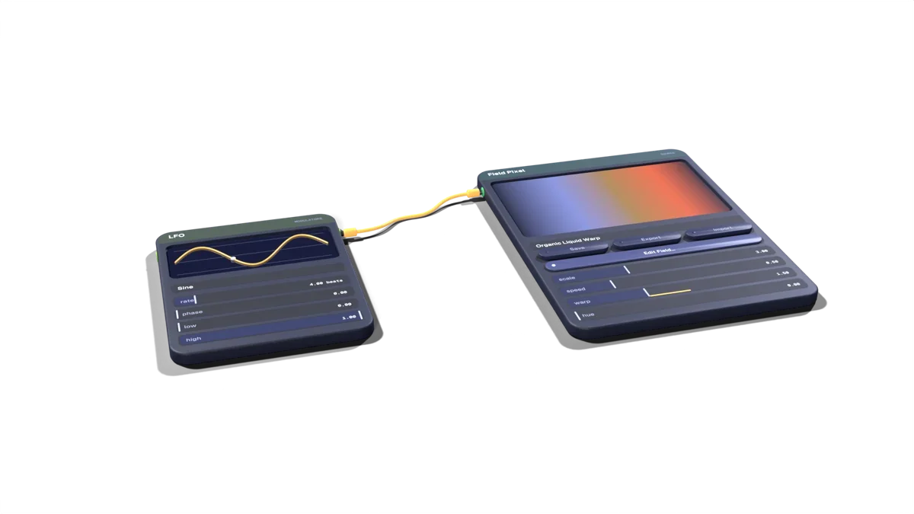

The Headless Engine
Render pictures, video, and sound from a plain text file. Same Infinite engine underneath, driven from the command line.

Overview #
Render pictures, video and sound from a text file, with no window and no mouse. The headless engine is the same Infinite you already have, driven from the command line. Anything a patch can do in the app (3D, Field kernels, modulation, synths, effects) works here, and the output is deterministic: the same patch gives the same frames and the same samples.
Who this guide is for:
| You are | Use |
|---|---|
| Writing scripts, batch jobs or a render pipeline | The command line (section 4) |
| Working in Infinite's Terminal panel | The infinite command (section 4.5) |
| Connecting an AI agent (Claude Desktop, Cursor, Windsurf) | The MCP server from npm (section 4.6) |
All three drive the same engine and read the same .inf files.
New in 2.0:
| Change | What it means |
|---|---|
--render --timeline | Export the Timeline arrangement headless, not only the canvas graph |
--frame --batch jobs.json | Many frame renders in one process |
--size keeps alpha | Resized frames keep their transparency |
| Isolated jobs | Each headless job runs on its own and gives the same result every time |
| Sample analysis | Headless runs wait until samples are analysed before rendering |
New infinite verbs | view2d-add, Timeline clip copy, paste, split, duplicate and inspect, marker colour, node drum, node mixer |
| MCP picture tools | infinite_compare_frames, infinite_find_knob, infinite_node_effects |
1. What you need #
| Need | Detail |
|---|---|
| The Infinite app | There is no separate package. The executable inside the app is the command-line tool. |
| A graphics driver | Frames are drawn by the real GPU pipeline, so a working GPU driver is required. |
| Linux only: a virtual display | Run every render as xvfb-run -a Infinite .... Without it you get E_NO_DISPLAY. |
| A text editor | Patches are plain text files ending in .inf. |
You do not need: a project file, the app open, a licence dialog, or any knowledge of the node graph beyond the nodes you use.
Not supported headless: patches that use a camera, microphone or MIDI device are refused (exit code 4) by --render and --audio-summary, because there is no hardware to read. Replace them with a file or a generator. (--frame does not check, so a stray MIDI node in a picture-only patch still draws.)
The executable #
| Platform | Path |
|---|---|
| macOS | Infinite.app/Contents/MacOS/Infinite |
| Windows | Infinite.exe |
| Linux | Infinite |
The examples below write it as Infinite. On macOS, make it a shortcut once:
alias Infinite="/Applications/Infinite.app/Contents/MacOS/Infinite"Check it works: Infinite --version prints the version number.
2. Your first render in five minutes #
Save this as hello.inf:
infinite-patch 1
node 1 Source Shape
id shape
i shapeType Star
end
node 2 Modulators LFO
id lfo
end
node 3 Utility Output
id out
end
cable out 0 shape
mod shape sizeX lfo 0 0 1 0.5
expr shape rotation sin(t) * 90Then run these in order:
Infinite --validate hello.inf
Infinite --frame hello.inf 0,1,2 pics/ --contact-sheet sheet.png
Infinite --render hello.inf hello.mp4 --duration 4 --fps 30| Step | What it does |
|---|---|
--validate | Loads the file strictly and lists every problem with its line number. Exit code 0 means it is good. |
--frame | Draws stills at 0, 1 and 2 seconds, and one contact sheet with each cell labelled by time. |
--render | Writes a video. |
A star pulses and spins. That is a complete patch: one shape, one modulator, one output. These are the three nodes it uses, as they look in the app:

3. The working loop #
Always work in this order. Do not guess a node's name or a parameter's range; ask the engine.
- Describe.
Infinite --describe "<node type>"lists the node's controls (key, default, min, max, dropdown options), inputs and outputs.Infinite --describealone lists every node type. Add--json file.jsonfor a machine-readable version. - Write the smallest patch that could work. Leave every control you do not change at its default.
- Validate.
Infinite --validate patch.inf. Fix errors until it exits 0. Each error names the line and suggests the nearest valid name. - Explain.
Infinite --explain patch.inf. It prints the graph that was actually built. Check that every wire you wrote is there and that nothing important is still at a default you meant to change. - Look and listen.
--framefor pictures,--audio-summaryfor sound. - Fix one thing at a time, and go back to step 3.
- Render the final file.
A patch can validate and still be the wrong patch, which is why step 4 exists.
4. Command reference #
4.1 Commands #
| Command | Purpose |
|---|---|
--describe [type] [--json file] | List node types, or one type's controls, inputs and outputs |
--validate patch.inf [--for-render] [--lenient] [--json file] | Check the file loads; report every problem |
--explain patch.inf [--json] [--all] [--lenient] | Print the built graph: nodes, non-default controls, wires, modulation ranges, world bounding boxes of geometry. --all lists every control |
--frame patch.inf T[,T...] out.png or dir/ | Still images at the given times in seconds. Several times need a folder |
--frame --batch jobs.json | Run multiple frame renders in one process ([{patch, t, out, size, node, ...}]) |
--frames-dir patch.inf out_dir --duration S | A numbered PNG sequence. Options: --start S, --fps N, --alpha, --depth 8 or 16 |
--render patch.inf out.mp4 or out.mov | A video with audio |
--audio-summary patch.inf out.json | The sound as numbers: loudness, peaks, clipping, silence, spectrum, tempo guess |
--canonicalize in.inf out.inf [--keep-ids] | Rewrite a patch in the numeric form the app saves |
--version | Print the version |
4.2 Options #
| Option | Applies to | Meaning |
|---|---|---|
--start S | render, frames-dir, audio-summary | First second to render (default 0) |
--duration S | render, frames-dir, audio-summary | Length in seconds. Default: the Output node's own length, else 10 |
--fps N | render, frames-dir | Frames per second, 1 to 240 |
--size WxH | frame, frames-dir, render | Override the output size, 1x1 up to 16384x16384 |
--bpm N | render, audio-summary | Tempo, 1 to 999 |
--sample-rate N | audio | 8000 to 384000 |
--codec h264 or prores4444 | render | Video codec. Use prores4444 (in a .mov) when you need transparency |
--no-audio | render | Write a silent video |
--node index[:output] | frame, frames-dir, render | Render this node instead of the Output. Great for checking one stage |
--geometry node | frame, frames-dir | Also report world bounding-box stats for a geometry node |
--set node.param=value | frame, frames-dir, render | Override one control for this run without editing the file |
--output node | audio-summary | Measure one Audio Out or Output instead of the whole mix |
--wav out.wav | audio-summary | Also write the audio as a WAV |
--stems id,id --stems-dir dir | audio-summary | Write one WAV per named node |
--notes events.json --note-map map.json | audio-summary | Play your own note events into the patch |
--timeline | render, audio-summary | Render or measure the Timeline arrangement instead of the canvas graph alone |
--plugin-params | render, audio-summary | List every loaded plugin's parameters (address, name, real range, default) in the plugins block of the result |
--plugin-state | render, audio-summary | Include plugin state blobs in the result |
--batch jobs.json | frame, audio-summary | Run a JSON array of frame or audio-summary jobs in one process |
--repeat 1-8 | frame | Repeat the frame render N times (determinism / warmup check) |
--contact-sheet sheet.png | frame | One image holding every requested frame |
--png-level 0-9 | frame, frames-dir | PNG compression |
--lenient | all | Treat unknown keys and removed nodes as warnings, not errors |
--json file | describe, validate, canonicalize | Write the result as JSON to a file |
--timeout S | all | Stop with exit code 6 after this many seconds |
4.3 Reading the result #
The last line printed is always one JSON object with these fields: ok, mode, frames, fps, size, audio, elapsed_ms, files, warnings, errors. Renders of a patch with plugins add a plugins block saying which loaded and which did not. Frame renders add frame_stats (brightness, black and white percentages, a histogram per frame). Audio summaries add audio_summary. Each issue is {code, message, line, node, hint}.
4.4 Exit codes #
| Exit | Meaning |
|---|---|
| 0 | Success |
| 2 | Bad command line |
| 3 | The patch does not load or validate. Read errors[0] |
| 4 | Refused: the patch needs a camera, microphone or MIDI device |
| 5 | Rendering failed |
| 6 | Timeout. Raise --timeout |
4.5 The infinite command #
Inside Infinite's Terminal panel, infinite is on the PATH. A verb goes to the running app, or to the headless flags above when you give it a .inf file. infinite alone lists every verb; infinite context prints the open patch, the selection and any code errors in one answer.
| Group | Verbs | |||||||||||||||||||||||||||||||||
|---|---|---|---|---|---|---|---|---|---|---|---|---|---|---|---|---|---|---|---|---|---|---|---|---|---|---|---|---|---|---|---|---|---|---|
| Look | graph, explain, params, selection, status, nodes, describe | |||||||||||||||||||||||||||||||||
| Edit | add, remove, connect, disconnect, set, reset, mod, mod clear, mod curve, expr, bypass, batch, undo, redo, select, focus, copy, paste, duplicate, group, ungroup, view3d-add, view2d-add, view2d | |||||||||||||||||||||||||||||||||
| Patch | new, recent, open, save, import, files, reveal, validate, canonicalize, apply | |||||||||||||||||||||||||||||||||
| Play | play, stop, rewind, seek, tempo | |||||||||||||||||||||||||||||||||
| Timeline | timeline prints it all; timeline track, clip (copy, paste, duplicate ... selection=true, split <id> playhead, inspect), marker (color <id> RRGGBB), group, loop, snap, render. Times are in beats; key=value words set fields | |||||||||||||||||||||||||||||||||
| Session | session scene, launch, launchrow, stop, add, insert, duplicatescene, deletescene, send, sceneset, slot, place, duplicate, clear, copy, paste, cut, quantize | |||||||||||||||||||||||||||||||||
| Notes | notes get, add <clip> beat:pitch[:length[:velocity]], set, delete, move, quantize, transform <track> <name>, export <clip>, generate <type> [key=value] | |||||||||||||||||||||||||||||||||
| Performance Matrix | perf get, add <kind> [label], remove, assign, clear, unmidi, set, edit, `page add | go | rename | delete | duplicate` | |||||||||||||||||||||||||||||
| Make | studio generate <part> [bars=n], `studio status | export | node <type> | get | set` | |||||||||||||||||||||||||||||
| Nodes and files | `node <node> rename | params | viewport | panel | window | timeline | session | preset | drum | mixer, library list | add | remove | refresh (drum open | close | dock | lanes | fill | grooves | groove | folder`) | ||||||||||||||
| See and hear | shot, frame, render, audio | |||||||||||||||||||||||||||||||||
| Code | code kinds, new, check, push, pull, watch, errors, docs, examples | |||||||||||||||||||||||||||||||||
| Generate | patch recipes, new, check, layout, apply | |||||||||||||||||||||||||||||||||
| App | `panel [name | settings/<place>] [open | close] [bottom | right | left | top | fill], settings [key [value]], settings devices\ | midi\ | apply\ | updates\ | reset\ | logs\ | gpu [n]\ | global [name [expr]]\ | extension <file>, show list\ | next\ | prev\ | go <n>\ | lock\ | panic\ | check\ | add\ | remove <n>\ | clear\ | open\ | save\ | fade <ms>\ | quantize <n>\ | launch <n>, view fit\ | params on\ | off\ | clearcards\ | metronome [on\ | off], quit` |
| Learn | context, attention, guide, docs [topic [name]], find <words>, version | |||||||||||||||||||||||||||||||||
| Watch | watch prints a JSON line for each change | |||||||||||||||||||||||||||||||||
| Terminal | term open, list, read, send, run |
A <node> is an index, selected, or a title or type only one node has. Exit codes match 4.4, plus 7: no running app answered. Each terminal is tied to its own app, so two running apps do not cross.
code check runs the real compiler and answers {ok, errors: [{code, message, line, col, hint}]}, with E_FIELD_COMPILE, E_SKETCH_COMPILE, E_GLSL_COMPILE or E_FORMULA_COMPILE. Add --look for one frame and its frame_stats. code watch file --node n pushes every save that compiles; a broken save reports its error and the node keeps its last good code.
patch check file.inf runs loads, reachable, picture and sound in order and stops at the first failure. Add --want moving-picture,sound to fail a still picture, or a silent or clipping patch.
4.6 AI agents: the MCP server #
The npm package infinite-engine connects Infinite to AI apps through the Model Context Protocol. It needs the Infinite app installed; it finds it through INFINITE_BIN, the usual install folders, or PATH.
npx -y infinite-engine initinit adds Infinite to Claude Desktop, Cursor and Windsurf if they are installed, keeps other servers in each config, and saves the old file next to it as .infinite-backup. Use --dry-run to see the plan, --only claude|cursor|windsurf to pick one app, and npx -y infinite-engine status to check the install. Restart the app afterwards.
To configure by hand, add this to the app's mcp.json (on Windows, Claude Desktop needs "command": "cmd", "args": ["/c", "npx", "-y", "infinite-engine", "serve"]):
{ "mcpServers": { "infinite": { "command": "npx", "args": ["-y", "infinite-engine", "serve"] } } }| Tool | What it does |
|---|---|
infinite_validate_patch | Validate a patch with the real compiler: code, line, node and hint per issue |
infinite_render_video | Export an mp4 from a patch |
infinite_render_field_pixel | Render a Field pixel kernel to frames |
infinite_render_field_primitive | Render a parametric surface written as Field equations |
infinite_render_field_modifier | Deform a mesh with a Field displacement expression |
infinite_render_sketch3d | Render 3D geometry written in JavaScript to a PNG |
infinite_synthesize_field_synth | Make a WAV from a per-sample Field synth kernel |
infinite_synthesize_field_notes | Generate note sequences and Euclidean rhythms into audio |
infinite_process_field_effect | Run audio through a Field filter, reverb or distortion kernel |
infinite_compare_frames | Say in plain words whether two pictures match |
infinite_find_knob | Find which node and control give a wanted picture change, from measured renders |
infinite_node_effects | Measured table of what each effect and colour node, and each of its controls, does |
Every result carries a credit line in an attribution field; nothing is written into your files. A second, Python MCP server (tools/mcp in the source, with tools such as infinite_render_frame and infinite_audio_summary) maps one tool to each headless command above. Both call the same engine; the developers page on infinitedevices.org covers it.
5. The patch file format #
A patch is a line-based text file. The first line is infinite-patch 1. Blank lines and lines starting with # are ignored.
node <index> <category> <type name>
id <word> optional name you can use instead of the index
f <key> <float> a number
i <key> <int or option> a whole number or dropdown choice (i shapeType Star)
b <key> <0 or 1> on/off
c <key> <r> <g> <b> a colour, each 0 to 1
s <key> <text> text, to the end of the line
end
cable <dst> <slot> <src> image wire
geo <dst> <slot> <src> geometry, camera or light wire
aud <dst> <slot> <src> audio wire
note <dst> <slot> <src> note wire
mod <dst> <key> <src> <srcOutput> <polarity> <depth> <centre> [<lo> <hi>]
expr <dst> <key> <expression>
glob <name> <expression>Rules worth remembering:
- Wires read destination first.
cable out 0 shapemeans "Output slot 0 is fed by shape". - Names work everywhere. Use a node's
idinstead of its number, a slot's name (input,input_2) instead of its position, and a control's key inmodandexpr. - Leave defaults out. A node needs only the keys it changes.
- Free text goes last on its line.
- No sigils in expressions. Write
P.y += bass * 2, never@P.y. - Bypass. A node with two or more inputs never bypasses, and a bypassed node does not cook.
- Something must be reachable. Pictures need a
Utility Output. Sound needs aUtility Audio Out, or an Output with audio wired in. - Animate inside the patch. Use modulators,
mod,exprandglob. Do not render one frame at a time with edited values.
The full record reference is docs/reference/patch-format.md. Three small working patches (picture, sound, modulation) are in assets/examples/authoring/.
6. Modulation: making things move #
Three ways, from simplest to most flexible.
| Way | Example | Use it for |
|---|---|---|
expr | expr shape rotation sin(t) * 90 | A formula of time t |
mod | mod shape sizeX lfo 0 0 1 0.5 | A modulator node (LFO, Random, Envelope, Audio Analyze) driving a control |
glob | glob wobble sin(t * 2) | A named value many controls can share |
Range of a mod. The two optional numbers after the centre, lo and hi, are the real values the control sweeps between. They are absolute, not percentages. If a sphere's scale is 0.5 and you want it to breathe by 40%, write 0.4 and 0.7, not 0.8 and 1.4.
Which controls can be modulated. Only some controls accept a modulator. Infinite --describe "<type>" --json marks them with a modulatable_index. If a control has none, it cannot be driven; use a node that does (for example a Transform placed after a 3D primitive).
Sound driving picture. Wire a final audio node into an Audio Analyze node. It outputs level, low, mid, high, onset and eight frequency bands, each of which can drive any modulatable control. Chain order matters: analyse the signal after your effects so the picture follows what you hear.
7. Working with 3D #
3D follows the same loop, with a few rules that save time.
- Primitives (Sphere, Cone, Cylinder, Torus, ...) have position, scale and rotation, but those are fixed, not modulatable. To animate a shape, send it through a Transform node and modulate that.
- A Transform applies scale and rotation about the shape's own centre, then moves it by its offset. Create the primitive at the origin at size 1, and put its size, rotation and position on the Transform. If a primitive is already scaled or moved, the Transform's offset will not land where you expect.
- Join shapes with Join Geometry, give them a Material, and send the result to Render 3D together with a Camera and one or more Lights.
Infinite --explain patch.inf --allprints each piece's world bounding box. Use it to check where things really are before blaming the lights.- If the picture is black or faint, check the camera distance, the light intensities, and the Render 3D ambient colour before changing anything else.
7.1 The 3D editing nodes #
| Node | In a patch | Notes |
|---|---|---|
| Edit Mesh | s ops sel all\nextrude 0.3 | One op per line, written \n in the file: sel f/v/e/all, move, rotate, scale, extrude, inset, delete. Elements are named by position, so the list survives an upstream change; a sel f line may end t + three corners per face and a sel v line r + a reach per point, which keep a face the whole face and a moved point a bump when the input is refined (Cube detail 4 to 96). Without them the nearest element is used. --explain shows the resulting vertex and face counts |
| Sculpt | f amount, i level | Strokes are the node's saved data; a patch with none passes the mesh through. A brush image input shapes the dab |
| Bake | i mode AO, Curvature, Position, Normal, Thickness, Sculpt | Outputs an image, so wire it to an Output or to a Material slot. Sculpt mode needs a sculpted input |
| Armature | i bones, f curl, f waveAmount | Pose and IK controls are pose0..; an optional path geometry input bends the chain along a curve |
| UV Project | i uvMode Smart, Cube, Cylinder, Sphere | Same engine as Transform's UV Project operation |
| Model 3D | s path file.glb, i clip, pose0.. | Skinned glTF clips, morphs and poses animate with the clock |
| Cloth, Rigid Bodies | geo input, Cloth also collider | Cloth colliderFriction, colliderDistance; Rigid Bodies collider Box, Sphere, Convex hull. Both simulate from time 0, so ask --frame for a later second to see motion |
| Render 3D | i engine Raster, Path trace, Live or Live + settle (Live: macOS) | ptSamples, ptBounces for the path tracer; renderPass and cavity, AO, depth of field controls for passes |
| Light, HDRI, Camera | geo r3 5 light, geo r3 4 camera, cable r3 8 hdri | An HDRI is an environment: it uses a cable line, not geo. Light useTemperature, useCutoff; Camera shiftX, sensorFit |
Write each control with its real tag; --describe "<type>" shows it, and --validate warns W_TYPE_MISMATCH when you guess wrong.
Not reachable from the CLI: selecting elements with the mouse in Edit Mode, drawing sculpt strokes, and the 3D View editor's scene items, gizmos and overlays (a bare 3D View node renders its empty stage). The re-runnable check for everything in this section is python3 tools/headless-docs/check_release_areas.py.
8. Troubleshooting #
| Symptom | What to check |
|---|---|
Black frame, W_BLACK_FRAME | Is the Output wired (W_OUTPUT_EMPTY)? Is a source's size or colour zero? Is a node upstream bypassed? |
Silent audio, W_SILENT | Is an Audio Out reachable from a synth? Do notes reach the synth? Is a volume at 0? |
W_UNUSED_NODE | The node reaches no Output or Audio Out. Wire it in or delete it |
E_FIELD_COMPILE | A Field node's code does not compile. --validate compiles Formula and Equation formulas, expressions and globs too, so you find out before rendering. The message gives the line |
W_PLUGIN_NOT_LOADED | A plugin in the patch could not be loaded (missing, or it crashed the app before). The node passes the sound through. Check plugins in the result |
W_NOTE_FANOUT | One note output feeds more than 64 consumers; the extra ones get no notes |
W_CLIPPING | Samples hit full scale. Lower a gain, or add a Limiter |
E_KIND_MISMATCH | You wired the wrong kind of signal (image into an audio slot). --describe lists each slot's kind |
E_BAD_KEY or E_BAD_VALUE | Misspelled control or dropdown option. The hint names the nearest valid one |
E_HARDWARE_SOURCE (exit 4) | The patch has a camera, microphone or MIDI source. Replace it |
E_NO_DISPLAY (Linux) | Run under xvfb-run -a |
| It validates but looks wrong | Run --explain and compare to what you meant |
| Something moves too far or too little | A mod range is absolute. Check lo and hi |
| A Prediction node (Drift, Moves, Predictive Notes, Rhythm, Quantize, Coloring, Velocity) sounds plainer than in the app | Headless runs do not load learned profiles; --describe marks these nodes profile_dependent |
9. Good practice #
- Keep patches in a folder under version control. They are plain text and diff cleanly.
- Render a contact sheet before a full video. A 4-frame sheet costs seconds.
- Use
--setto try a value without editing the file. - Use
--nodeto look at one stage of a long chain. - Quote the command line when a patch lives in a folder with spaces.
- The output is deterministic, so a patch that renders correctly once renders the same way again. Frame renders hold the clock at zero from the first tick, so history nodes such as Time Machine render the same every run, and headless runs never read or write the learned prediction profiles. One known exception: a patch with Field Notes and any modulation cable can differ slightly between audio runs (about 0.1 dB in loudness in the case we measured).
10. Where to go next #
| Want | Look at |
|---|---|
| Every node and its controls | Infinite --describe, and the Node Reference Manual PDF |
| The exact file format | patch-format.md on GitHub |
| What can be wired to what | connection-rules.md on GitHub |
| Starter patches | assets/examples/authoring on GitHub |
| Field (the expression language) | The Field Language Manual (PDF, infinitedevices.org) |
| AI agents | npx -y infinite-engine init, and the developers page on infinitedevices.org |